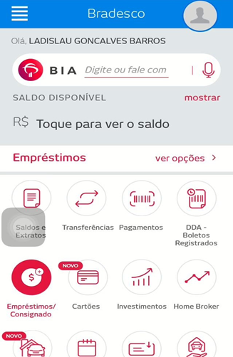
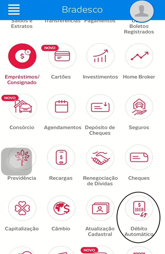
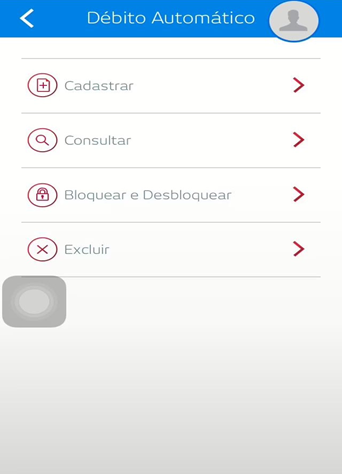
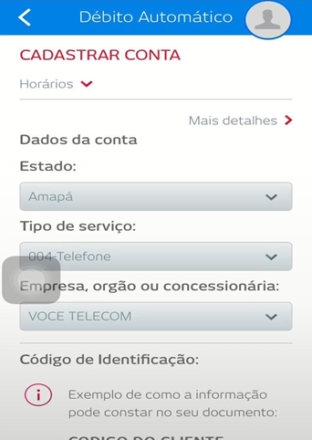
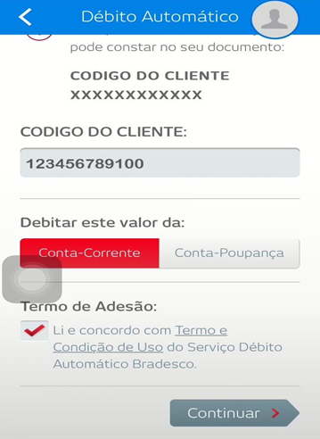
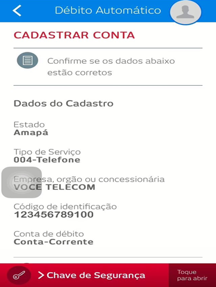

Passo 1: Acesse sua conta via internet banking e selecione a categoria Débito Automático.


Passo 2: Em seguida, selecione a opção Cadastrar e preencha as informações com dos seguintes dados: Estado: Amapá – Tipo de serviço: Telefonia – Empresa: Você Telecom.


Passo 3: Ainda no cadastro dos dados, insira agora seu dígito verificador e selecione a forma de pagamento do débito. Depois de preenchido, clique em continuar.

Passo 4: Após seguir todos os passos acima e confirmar todos os dados inseridos, insira sua assinatura eletrônica para fazer a confirmação.

Pronto! Seu débito automático foi devidamente cadastrado.